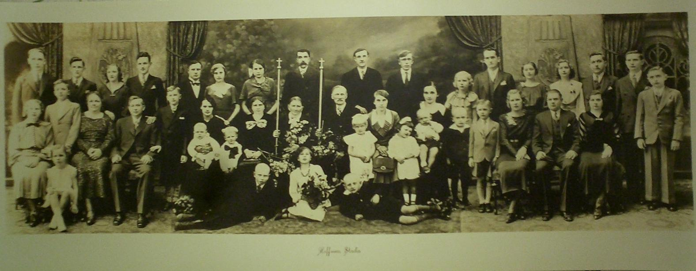
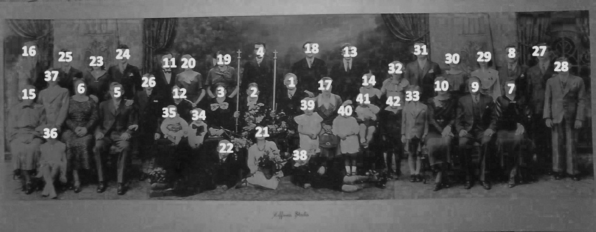

Please excuse the crude formatting; I will be fixing this up later. I just want to get the information posted now.
This is a photo from Józef and Franciszka's 50th wedding aniversary in 1934.

To more easily identify who is who in the image, I've added numbers to each face in this second version. The numbers are used below that to identify everyone here.

The photo is of the Józef Bartold and Franciszka Nałęcz clan on their 50th anniversary. They were married in February of 1884. The photo was taken in 1934. The first part of the photo, the central portion, was taken in Poland with the four children still living there, along with their spouses and children. The left and right hand portions, with the four children living in America were added at Hoffman Studios later that year. Józef and Franciszka's grandchildren are mainly grouped around their parents. Although we're certain all of them living at the time are actually in the photo, we don't know the birth and/or death dates of many of them. Note that I've added in other descendants who were not alive at the time with a 'number 'x.' 1. Józef Bartold (1859-1940) m.(1884) 2. Franciszka Nałęcz (1862-1937) 3. Bronisława Bartold (1885-) m.(1917) 4. Stanisław Kutołowski 12. Alina Kutołowska 21. Gabriela Kutołowska 19. Franciszka Kutołowska 22. Jan Kutołowski 5. Walter/Wacław Bartold (1886-1960) m.(1911) 6. Rozalia Wojcinski (1894-1971) 23. Emily/Amelia Bernice Bartold (1912-1986) 24. Chester/Czesław Witold Bartold (1915-1979) 25. Mitchell Edwin Bartold (1918-2008) 26. Norbert Eugene Bartold (1926-2008) 7. Sophie/Zofia Bartold (1890-1984) m.(1913) 8. Stanley/Stanisław Jaworski (1895-1956) 29. Charlotte/Jessie/Czesława Jaworski (1914-1988) 30. Regi/Virginia/Regina Jaworski (1916-1973) m.(1934?) 31. Joseph Benson (1912-1996) 28. Henry/Henryk Jaworski (1918-1973) 27. Ted/Teddy/Theodore/Tadeusz Jaworski (1922-1976) 9. Victor/Wictor Bartold (1893-1979) m.(1923) 10. Marie Kownacka (1905-1990) 32. Sylvia W Bartold (1925-) 33. Leonard C Bartold (1929-2011) x. Konstanty Bartold (1895-1920) 11. Ignasz Bartold (1897-1979) m.(1928) 20. Natalia Rostkowska (1909-1983) 34. Ryszard Bartold 35. Mieczysław Bartold x. Krystyna Bartold x. Halina Bartold 13. Michał Bartold (1899-1969) m.(1929) 14. Stanisława Kownacka (1908-1994) 42. Józef Bartold (1930-2004) 40. Jadwiga Bartold (1931-1999) 41. Waldemar Bartold (1932-2000) x. Marianna Bartold (1938-2006) x. Władisław Bartold (1942-) x. Wiktor Szczepan Bartold (1947-2002) x. Jan Bartold (1950-) 15. Angeline/Nellie/Anjela Bartold (1902-1995) m.(1923) 16. John Wasko (1891-1986) 36. Joan/Jane/Janina Wasko (1931-1994) 37. Joe/Józef Wasko (1924-1994) 17. Filomena Bartold (1905-1990) m.1925 18.Franciszek Niesłuchowski (1899-1960) 38. Lucian Niesłuchowski (1927-1993) 39. Bronisława Niesłuchowska (1931-2008) x. Wiktor Niesłuchowski (1936-)
Franciszka died in 1937 and Józef in 1940. I visited their grave in the cemetery in Gzy and took these photos of the grave marker.
Józef was born in 1859 in Grochy Imbrzyki. Franciszka in 1862. These are the scans of the books where the births were recorded. The scan of Franciszka's also includes Józef's brother Władysław.
Józef is No.62 on the left in the first image. Franciszka is on the top left of the second image, Władysław is on the top right.
These records are in Polish.


Józef and Franciszka were married in 1884, so their marriage record in written in Russian. All records from the period 1868 to 1918 in the portion of Poland controlled by Russia were required to be written in Russian.
The relevant record is on the left.